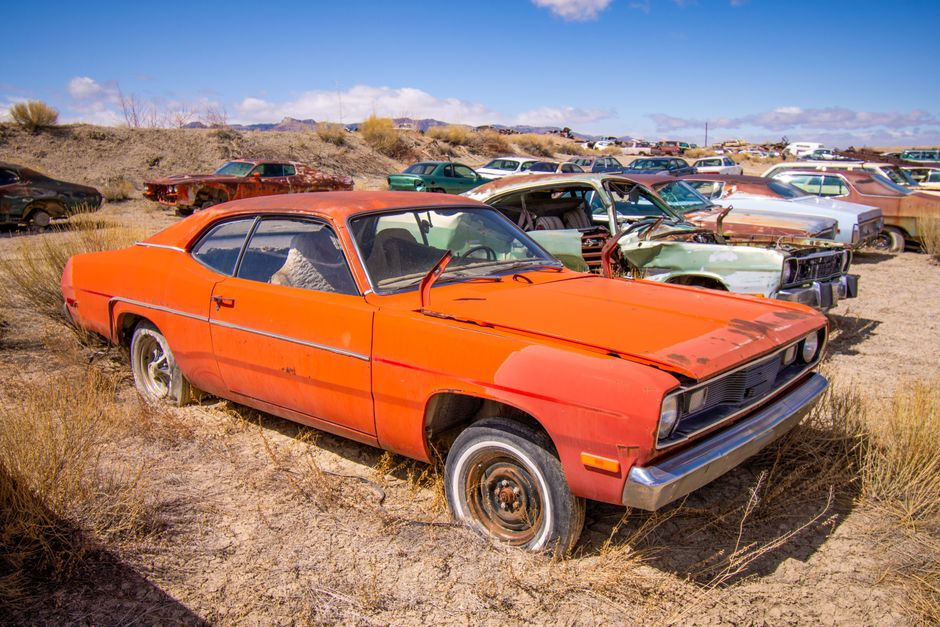

5등급은 올해가 마지막 — 2026년 노후차 조기폐차 보조금 300만원과 6개월·정상가동 5조건
발행일 2026-10-18

차량등록증의 연식이 2005~2009년 사이 경유차라면, 그리고 시세표에서 내 차 값이 이미 100만원 아래로 내려갔다면 — 이 차를 없애는 데 오히려 돈이 됩니다. 노후차 조기폐차 보조금입니다. 보조금은 보험개발원이 산정한 당해연도 1분기 차량기준가액에 지원율을 곱해서 줍니다. 3.5톤 미만 5등급 자동차라면 100%를 최대 300만원까지 손에 쥡니다. 여기에 두 개의 조건이 걸려 있습니다. 첫째, 배출가스 5등급 지원은 2026년까지로 못박혀 있어 올해가 막차입니다. 둘째, 보조금은 차를 없애기 전에 신청해서 지급대상 확인서를 먼저 받아야 나옵니다. 먼저 폐차해버리고 "나도 받을 수 있었나" 하면 늦습니다. 아래에 5개 신청 조건, 등급·차종별 지원율, 그리고 실제로 많이 떨어지는 사유까지 정리했습니다.
30초 요약
| 항목 | 내용 |
|---|---|
| 누가 | 배출가스 5등급 자동차(경유 외 연료 포함)와 4등급 경유자동차. 도로용 3종 건설기계(덤프·믹서트럭·펌프트럭), 조건을 갖춘 지게차·굴착기도 포함 |
| 얼마 | 차량기준가액 × 지원율. 5등급 3.5톤 미만 = 100%, 상한 300만원. 4등급 경유 3.5톤 미만 = 70%, 상한 800만원 |
| 추가 | 저소득층·소상공인은 상한 범위 안에서 100만원 추가. 5등급 중 저감장치 부착 불가 차량은 화물·특수 100만원, 그 밖의 차 60만원 추가 |
| 기한 | 5등급 지원은 2026년까지. 사업연도 내 예산 소진 시 조기 마감되므로 지자체 공고 접수기간이 실질 마감이 됩니다 |
| 사전 확인 | 사용본거지 6개월 이상 연속 등록, 관능검사 적합, 정상가동 판정, 저감장치·엔진 개조 이력 없음 — 5개 조건을 모두 충족해야 합니다(3.5톤 미만은 앞의 4개) |
| 신청 | 자동차배출가스 종합전산시스템(mecar.or.kr) 회원가입 → 저공해조치 신청 → 조기폐차. 폐차 후 말소등록증을 내면 1차가, 신규·중고차 구매 후 신청하면 2차가 지급됩니다 |
1. 누가 — 먼저 내 차 등급부터
가장 먼저 확인할 것은 연식이 아니라 등급입니다. 경유차라고 무조건 되는 것도, 연식이 오래됐다고 무조건 되는 것도 아닙니다. 자동차 배출가스 종합전산시스템에서 차량번호로 등급이 조회되고, 콜센터(1833-7435)로도 확인할 수 있습니다.
- 5등급 자동차 — 연료 구분 없이(경유·휘발유·LPG) 5등급 판정을 받았다면 대상입니다. 이 지원은 2026년까지로 예정돼 있어 내년부터는 받을 길이 사라질 수 있습니다. 게다가 예산이 먼저 소진되면 지자체 공고가 연도 끝나기 전에 닫히니, 타이밍이 곧 금액입니다.
- 4등급 경유자동차 — 대상이고, 지원율이 70%로 낮을 뿐 상한은 800만원으로 오히려 더 큽니다. 다만 4등급은 올해 이후에도 사업이 이어질 여지가 있어, 12월에 급하게 몰릴 필요는 상대적으로 적습니다.
- 휘발유 4등급은 이 사업 대상이 아닙니다. 4등급은 경유만입니다.
- 관용차량은 지원 대상에서 빠집니다.
등급 못지않게 자주 발목을 잡는 것이 등록 연혁입니다. 사용본거지(차량등록지)가 대기관리권역이나 신청지역에 신청일 기준 6개월 이상 연속해서 등록돼 있어야 합니다. 이사·명의 이전으로 등록된 지 얼마 안 됐다면 그 6개월을 다시 세워서, 채운 뒤에 신청해야 합니다.
2. 얼마 — 등급·총중량별 지원율
금액은 "차 나이"로 정해지지 않습니다. 보험개발원이 산정한 당해연도 1분기 차량기준가액 × 지원율이 계산식입니다. 같은 연식이라도 트림·구동방식에 따라 금액이 달라지고, 기준가액 표에 없는 연식은 직전 연도 가액에 매년 15% 감가상각을 적용해 계산합니다. 지급은 천원 단위(천원 미만 절사)로 합니다.
| 구분 | 1차(폐차) 지원율 | 상한액(1차+2차) | 2차(차량구매) |
|---|---|---|---|
| 5등급 · 총중량 3.5톤 미만 | 100% | 300만원 | 지원 없음 |
| 4등급 경유 · 총중량 3.5톤 미만 | 70% | 800만원 | 전기·수소·하이브리드(경유 하이브리드 제외) 신규 등록 시 30% 추가 |
| 5등급 · 3.5톤 이상 | 100% | 배기량별 440만~3,000만원 | 신차 200% / 중고차 100% |
| 4등급 경유 · 3.5톤 이상 | 100% | 배기량별 720만~7,800만원 | 신차 200% / 중고차 100% |
예를 들어보겠습니다. 3.5톤 미만 5등급 승용차의 2026년 1분기 차량기준가액이 240만원이라면 → 지원액 240만원(100%), 상한 300만원 안에 있으니 그대로 240만원입니다. 저감장치를 달 수 없는 차종으로 확인된 차라면 그 밖의 차량 추가지원 60만원이 붙어 최대 300만원(상한)까지 채워집니다. 국민기초생활수급자나 차상위계층이면 100만원이 또 추가되지만, 이 추가분도 상한액 안에서만 살아남습니다. 결국 가액이 낮은 오래된 차일수록 추가지원 여지가 없고, 가액이 중간인 차가 실제로 손에 쥐는 돈이 가장 큽니다.
4등급 경유 화물차를 조기폐차하고 전기·수소·하이브리드 신차를 등록한다면 70%(1차)에 30%(2차)가 더해집니다. 다만 2차는 폐차하는 차와 사는 차의 소유자가 일치해야 하고, 신청 전에 이미 그 대상차를 소유하고 있어야 인정됩니다.
3. 제외·함정 — 여기에서 떨어집니다
- 정상가동 판정. 지자체나 절차대행자가 발급하는 '조기폐차 대상차량 확인서'에 정상가동 판정이 있어야 합니다. 엔진이 잘 걸리지 않는 차량은 이 단계에서 탈락할 수 있어, 신청 전에 시동·주행 상태를 한 번 봐두는 편이 안전합니다.
- 관능검사(정기검사) 적합 판정 + 검사 유효기간 이내. 검사를 안 받고 방치한 차는 이 조건부터 막힙니다. 다만 검사 유효기간이 연장된 경우는 인정됩니다.
- 저감장치·저공해엔진 개조 이력. 정부나 지자체 지원으로 DPF를 붙이거나 엔진을 개조한 적이 있으면 대상에서 빠집니다(콘크리트믹서트럭·펌프트럭은 예외 적용 가능).
- 환경개선부담금 체납. 신청 전에 수시분을 포함해 납부를 끝내 두세요. 체납이 남아 있으면 처리가 늦어지거나 아예 막힙니다.
- 6개월 소유 요건. 3.5톤 이상은 신청일 기준으로 6개월 이상 소유한 자만 신청할 수 있고, 소상공인 추가지원도 6개월 연속 소유가 기준입니다. 급하게 사서 바로 폐차하는 식의 '구매 후 폐차'는 잘 안 됩니다.
- 유효기간. 보조금 지급대상 확인서가 발급된 날부터 2개월이 지나면 청구를 못 합니다. 확인서를 받아놓고 폐차를 미루다가 기간을 넘기는 사례가 실제로 많습니다. 반대로 확인서 나오기 전에 먼저 폐차·말소해도 지급이 불가능합니다.
4. 서류
- 조기폐차 신청서(지자체 공고문 별지 서식)
- 자동차등록증 사본
- 개인: 소유자 신분증 사본 / 법인: 사업자등록증 사본 — 공동명이면 모든 명의자 신분증
- 해당자만: 저감장치 부착불가 확인서, 기초생활수급자·차상위계층 확인서, 소상공인 확인서(중소기업현황정보시스템 발급), 차량 사양 증빙(트림·구동방식), 도로용 3종 건설기계는 배출가스 등급 확인 서류
- 폐차 후: 말소등록증과 보조금 지급청구서
저소득층·소상공인 증빙은 신청할 때 붙여야 인정되고, 나중에 내면 인정되지 않습니다. 발급일이 신청일 1개월 이내인 최근 자료만 유효합니다.
5. 순서 — 확인서 → 폐차 → 청구
- 종합전산시스템(mecar.or.kr)에서 내 차의 배출가스 등급을 확인합니다.
- 관할 지자체 공고로 접수기간을 확인하고, 온라인(종합전산시스템 저공해조치 신청) 또는 방문·등기우편으로 신청서를 냅니다.
- 지자체·협회에서 보조금 지급대상 확인서를 발급합니다.
- 대상차량 확인(정상가동 판정)을 받고, 판정이 나오면 폐차 후 말소등록증을 제출합니다.
- 보조금 지급청구서와 서류를 내서 1차 보조금을 수령합니다.
- 차를 새로 사는 경우, 신규·중고차 등록 후 추가보조금을 신청합니다. 3.5톤 미만에서는 5등급에 추가분이 없고 4등급 경유차만 대상이니, 이 단계는 해당자만 거치면 됩니다.
6. 안 될 때
- 등급이 4등급 휘발유·LPG로 나왔다 → 이 사업은 4등급 중 경유만 대상입니다. 대신 5등급 판정이 나는 다른 연료차가 대상이 되니, 등급 조회 결과를 다시 확인해 보세요.
- 사용본거지 6개월을 못 채웠다 → 등록 시점부터 다시 세야 하므로 6개월을 채운 뒤 재신청합니다. 이사로 시·도를 옮긴 해에는 대기관리권역 안인지도 함께 봅니다.
- 폐차를 이미 해버렸다 → 확인서 발급 전에 말소하면 소급해서 받을 수 없습니다. 이제 남긴 길은 다음 해 사업 재도전뿐이니, 이번 글의 순서(확인서 먼저)를 지키는 게 전부입니다.
- 접수기간은 지났는데 예산이 남았다 → 미소진·취소 물량은 추후 추가 공고로 나오는 지자체가 있습니다. 담당 부서에 추가 공고 계획을 문의해 두세요.
바로 가기
같이 읽기
- 자동차 정기검사 과태료, 2026년 — 4만원부터 60만원까지 지연일수 계산표
- 자동차세 연납, 언제 신청하면 이득일까
- 중고차 성능기록부, 침수 표시만 보면 놓칩니다 — 120일 유효·30일 보증, 계약 전 확인 5곳
- 자동차 등록원부 읽기 — 갑구·을구, 중고차 사기 전에 딱 3분